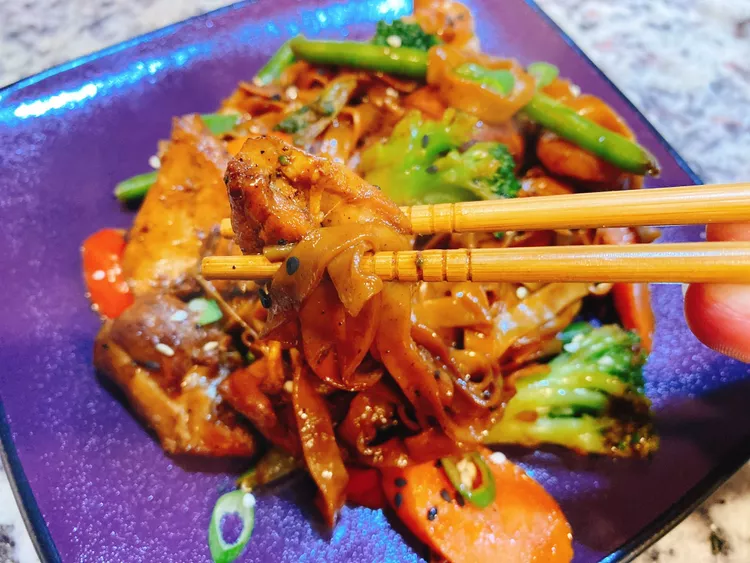

Chicken Teriyaki & Noodles

Description
This chicken teriyaki dish served over noodles feeds 6 and includes steps for a homemade sauce.
Between prep time and cook time, this recipe can be completed in just 20 minutes.
Ingredients - Chicken Dish
- 1 lb skinless, boneless chicken thighs, cut into bite-sized pieces
- 1/2 teaspoon salt
- 1/4 teaspoon freshly ground black pepper
- 2 teaspoons sesame oil
- 5 cloves minced garlic
- 1 teaspoon minced fresh ginger root
- 1 pinch red pepper flakes (optional)
Ingredients - Sauce
- 1/3 cup low-sodium soy sauce
- 1/4 cup mirin (Japanese sweet wine)
- 1/4 cup sake (Japanese rice wine)
- 2 tablespoons brown sugar
- 5 cloves minced garlic
- 1 teaspoon minced fresh ginger root
- 1 pinch red pepper flakes (optional)
Directions
- Season chicken pieces with salt and pepper.
- Heat sesame oil in a large skillet over medium-high heat. Add chicken pieces and cook, stirring, until chicken is browned, 3 to 5 minutes. Remove chicken to a plate and keep warm.
- Meanwhile, bring a pot of water to a boil over high heat. Add noodles and vegetables and cook until noodles are softened, about 3 minutes.
- Combine soy sauce, mirin, sake, brown sugar, garlic, ginger, and red pepper flakes in a bowl. Stir to combine and pour sauce into the skillet. Cook stirring frequently until sauce is thickened, about 3 minutes. Add chicken back into skillet with sauce.
- Drain noodles and vegetables and add to skillet. Stir to combine and serve.